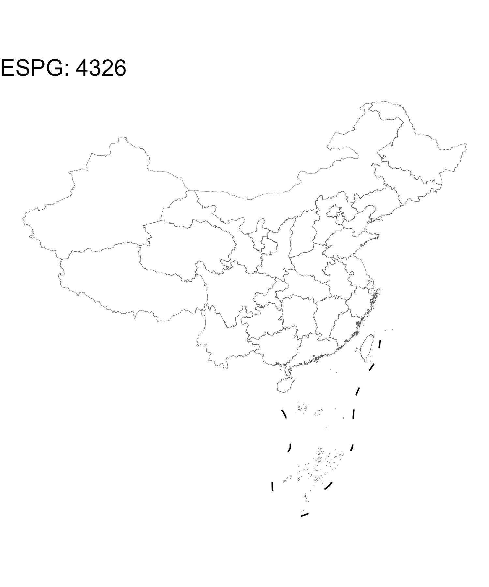
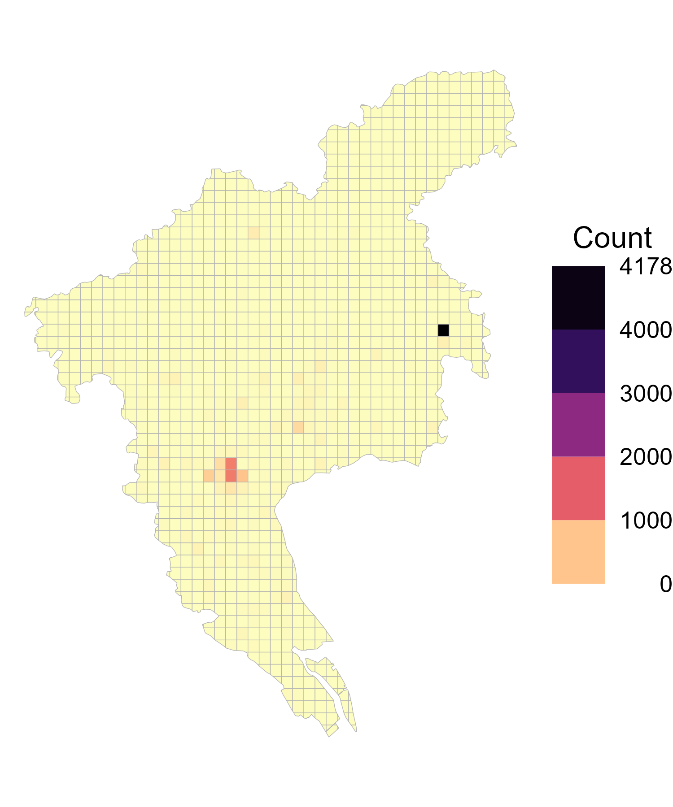

pacman::p_load(raster, sf, stars, cubelyr, dplyr, ggplot2, viridis, here, ggspatial)
options(rgl.useNULL = TRUE)
Sys.setenv(PROJ_LIB = '/data1/Software/Installed/Anaconda3/envs/r4.1/share/proj')在公共卫生的科研论文或标书撰写过程中，我们常常需要使用地址数据。此时，能用可视化的方式展示样本的空间分布往往能够给编辑或审稿人较好的印象分。
空间数据总述
数据类型
- 栅格数据（raster data）：一般是规整的相等面积的长方形格子。常见数据格式：
.tif和.nc。 - 矢量数据（vector data）：点、线、多边形（polygons）。常见数据格式：
.shp。
下图展示了矢量数据和栅格数据的示意图

相关R包
- 矢量数据：
- 新：
sf - 旧：
sp
- 新：
- 栅格数据：
- 新：
stars - 旧：
raster,terra
- 新：
相关函数
读取数据
- 矢量数据：
sf::read_sf() - 栅格数据：
- 新：
stars::read_stars() - 旧：
raster::raster(),terra
- 新：
数据绘图
此处只介绍运用ggplot2图层语法进行绘图的函数
- 矢量数据：
geom_sf() - 栅格数据：
geom_stars()
R语言实践
加载环境
首先需要加载R环境和相关的包。如果你使用的是课题组的Linux服务器，则下面三行均需要运行。如果你使用自己的电脑，或者你的R包环境已经配置好，可以忽略pacman::p_load下面的那两句。
矢量边界绘制
本节以中国的矢量图边界为例，展示用R的sf和dplyr包来处理矢量地图数据（.shp文件），然后用ggplot2来绘制矢量边界地图。由于全国的所有边界数据较大，绘制时间比较久，因此大部分时间本文采用广州市的区县边界进行展示。
数据位置
shp_path = '/data2/ShareData/MAP/China_shp'
public_path = '/data1/Public'
fs::dir_info(shp_path) %>%
select(path, size) %>%
filter(grepl('\\.shp', path))# A tibble: 5 × 2
path size
<fs::path> <fs::bytes>
1 E:/China_shp/boundary.shp 1.01M
2 E:/China_shp/city.shp 26.35M
3 E:/China_shp/county.shp 57.66M
4 E:/China_shp/NineLine.shp 2.88M
5 E:/China_shp/province.shp 23.32M从上到下分别是：
- 中国国界（
boundary.shp） - 中国市级边界（
city.shp） - 中国区县级边界（
county.shp） - 九段线（
NineLine.shp） - 中国省级边界（
province.shp）
矢量数据读取
CN_boundary = read_sf(here(shp_path, 'boundary.shp'))
CN_city = read_sf(here(shp_path, 'city.shp'))
CN_county = read_sf(here(shp_path, 'county.shp'))
CN_9dash = read_sf(here(shp_path, 'NineLine.shp'))
CN_province = read_sf(here(shp_path, 'province.shp'))矢量数据清理
这些矢量数据实际就像数据框，可以使用dplyr（dplyr::select()，mutate(), filter(), arrange()）的语法进行操作。例如，可以使用filter()选取广州市的区县边界：
CN_county %>%
filter(市 == '广州市')Simple feature collection with 11 features and 7 fields
Geometry type: MULTIPOLYGON
Dimension: XY
Bounding box: xmin: 815833.3 ymin: 2383964 xmax: 925069.2 ymax: 2537977
Projected CRS: Krasovsky_1940_Albers
# A tibble: 11 × 8
PAC NAME 省代码 省 市代码 市 类型 geometry
* <dbl> <chr> <dbl> <chr> <dbl> <chr> <chr> <MULTIPOLYGON [m]>
1 440103 荔湾区 440000 广东省 440100 广州市 市辖区 (((847866 2444953, 848089.6…
2 440104 越秀区 440000 广东省 440100 广州市 市辖区 (((848782.7 2445425, 849481…
3 440105 海珠区 440000 广东省 440100 广州市 市辖区 (((853312.2 2440874, 854128…
4 440106 天河区 440000 广东省 440100 广州市 市辖区 (((863466.5 2455459, 863169…
5 440111 白云区 440000 广东省 440100 广州市 市辖区 (((869239.4 2477347, 869252…
6 440112 黄埔区 440000 广东省 440100 广州市 市辖区 (((871179.3 2476068, 871272…
7 440113 番禺区 440000 广东省 440100 广州市 市辖区 (((876897.9 2433952, 876905…
8 440114 花都区 440000 广东省 440100 广州市 市辖区 (((847130 2495872, 847622.5…
9 440115 南沙区 440000 广东省 440100 广州市 市辖区 (((895851 2386042, 893897.1…
10 440117 从化区 440000 广东省 440100 广州市 市辖区 (((921473.7 2534710, 921480…
11 440118 增城区 440000 广东省 440100 广州市 市辖区 (((923442.3 2473232, 923443…类似地，也可以选取广州市各个区县的数据，如：
CN_county %>%
filter(市 == '广州市' & NAME == '越秀区')Simple feature collection with 1 feature and 7 fields
Geometry type: MULTIPOLYGON
Dimension: XY
Bounding box: xmin: 847188.4 ymin: 2440527 xmax: 856131.5 ymax: 2447259
Projected CRS: Krasovsky_1940_Albers
# A tibble: 1 × 8
PAC NAME 省代码 省 市代码 市 类型 geometry
* <dbl> <chr> <dbl> <chr> <dbl> <chr> <chr> <MULTIPOLYGON [m]>
1 440104 越秀区 440000 广东省 440100 广州市 市辖区 (((848782.7 2445425, 849481.…矢量边界绘制
我们可以使用ggplot2::geom_sf()对广州市的区县边界进行绘制：
ggplot() +
geom_sf(
data = CN_county %>%
filter(市 == '广州市')) +
theme_void()如果你讨厌灰色的填充颜色，也可以通过fill = NA把颜色去掉：
ggplot() +
geom_sf(
data = CN_county %>%
filter(市 == '广州市'),
fill = NA) +
theme_void()我们可以通过ggspatial::annotation_north_arrow()和ggspatial::annotation_north_arrow()分别加上指北针和标尺。具体样式可以参考相关R文档进行修改。
ggplot() +
geom_sf(
data = CN_county %>%
filter(市 == '广州市'),
fill = NA) +
annotation_scale( # 标尺
width_hint = 0.4,
text_cex = 1,
unit_category = 'metric',
location = 'bl') +
annotation_north_arrow( # 指北针
location = "tl",
which_north = "true",
height = unit(0.7, "cm"),
width = unit(0.7, "cm"),
pad_y = unit(0.5, "cm")) +
theme_void()矢量投影
WGS84是目前最流行的地理坐标系统。在国际上，每个坐标系统都会被分配一个EPSG 代码，EPSG:4326就是WGS84 的代码。GPS是基于WGS84的，所以通常我们得到的坐标数据都是WGS84的。一般我们在存储数据时，仍然按WGS84存储。计算地理距离时也应该通过WGS84投影进行计算。
但是如果绘图的时候使用WGS84投影，会显得靠近两极地区的面积失真。对于中国地图来说，WGS84投影非常不美观，画图来的地图像”一只强制性脊柱炎的公鸡”。因此，如果需要绘制全国地图，可以使用ESPG: 4508或者ESPG: 32649，在ggplot2中可以通过coord_sf(crs = XXXX)来设置整幅图的投影。
对于矢量数据，可以通过sf::transform()对其投影进行转换，如：
# 原始数据投影为Asia_North_Albers_Equal_Area_Conic
head(CN_province)Simple feature collection with 6 features and 2 fields
Geometry type: MULTIPOLYGON
Dimension: XY
Bounding box: xmin: -1492657 ymin: 2089131 xmax: 1056683 ymax: 4682373
Projected CRS: Asia_North_Albers_Equal_Area_Conic
# A tibble: 6 × 3
CNAME Name_E geometry
<chr> <chr> <MULTIPOLYGON [m]>
1 安徽省 Anhui (((578768.5 3711869, 578787.1 3711729, 578883.3 3711606, 578…
2 澳门 Macao (((373363.8 2308123, 373702.6 2307267, 373759.7 2307131, 374…
3 北京市 Beijing (((548491.6 4437692, 548534.5 4437621, 548562 4437591, 54859…
4 福建省 Fujian (((759764.7 2483316, 759718.8 2483296, 759692.8 2483307, 759…
5 甘肃省 Gansu (((-350146.9 3792524, -350199 3792482, -350290 3792537, -350…
6 广东省 Guangdong (((12072.27 2090275, 12129.04 2090236, 12168.24 2090234, 121…# 我们将其投影为WGS84
CN_province_4326 = st_transform(CN_province, crs = 4326)
head(CN_province_4326)Simple feature collection with 6 features and 2 fields
Geometry type: MULTIPOLYGON
Dimension: XY
Bounding box: xmin: 92.33783 ymin: 20.22318 xmax: 120.7244 ymax: 42.79458
Geodetic CRS: WGS 84
# A tibble: 6 × 3
CNAME Name_E geometry
<chr> <chr> <MULTIPOLYGON [°]>
1 安徽省 Anhui (((116.4295 34.63088, 116.4296 34.62963, 116.4306 34.62848, …
2 澳门 Macao (((113.5874 22.16486, 113.5904 22.15695, 113.5909 22.1557, 1…
3 北京市 Beijing (((116.632 41.05889, 116.6325 41.05824, 116.6328 41.05795, 1…
4 福建省 Fujian (((117.4155 23.56092, 117.415 23.56077, 117.4148 23.56089, 1…
5 甘肃省 Gansu (((106.0713 35.44953, 106.0708 35.44915, 106.0697 35.4496, 1…
6 广东省 Guangdong (((110.1136 20.23365, 110.1142 20.23329, 110.1146 20.23328, …在使用ggplot2绘图过程中，也可以通过coord_sf(crs = XXXX)对投影进行转换。
ggplot() +
geom_sf(data = CN_province, fill = NA, size = 0.1) +
geom_sf(data = CN_9dash %>%
filter(LEFT_FID == 0)) +
labs(title = 'ESPG: 4326') +
theme_void(base_size = 14) +
coord_sf(crs = 4326)
ggplot() +
geom_sf(data = CN_province, fill = NA, size = 0.1) +
geom_sf(data = CN_9dash %>%
filter(LEFT_FID == 0)) +
labs(title = 'ESPG: 4508') +
theme_void(base_size = 14) +
coord_sf(crs = 4508)
栅格数据绘制
数据读取
通过stars::read_stars()读取.tif文件得到的是stars数据类型，属于栅格数据类型。stars数据一般有三个维度（dimension）：x，y和band，其中x和y分别为经纬度，band则指时间维度，可将不同日期的数据整合到同一个stars对象中。除了维度之外，还包括一个属性（attribute），主要指数据变量，如空气污染和绿植覆盖。
pm_gz = read_stars(here(public_path, 'CHAP_PM2.5_Guangzhou.tif'))
pm_gzstars object with 2 dimensions and 1 attribute
attribute(s):
Min. 1st Qu. Median Mean 3rd Qu. Max. NA's
CHAP_PM2.5_Guangzhou.tif 20.5 21.9 22.8 22.77476 23.5 30.7 8557
dimension(s):
from to offset delta refsys point values x/y
x 1 109 112.962 0.01 WGS 84 FALSE NULL [x]
y 1 136 23.9297 -0.01 WGS 84 FALSE NULL [y]此处的样例数据因为是单天的数据，因此只有两个维度（x和y），没有band的维度。数据的属性为CHAP_PM2.5_Guangzhou，并且报告了其简单的统计量（最小值、最大值、均值、缺失值数量以及四分位数）。每个维度都有一个名字（如x和y），每个维度的域的含义分别为：
| 域 | 含义 |
|---|---|
from |
原点 |
to |
终点的索引 |
offset |
此维度起始点的值 |
delta |
此维度网格的大小 |
refsys |
投影系统 |
point |
逻辑值，TRUE代表点，FALSE代表区间 |
values |
此维度的值 |
对于某个维度第i处的坐标为offset + (i - 1)*delta， 此值对应的是该栅格或区间的起始点。如果想得到该栅格或区间的中间点，则需额外加上0.5倍的offset。
stars数据类型也可以通过dplyr包中的函数进行清理和转换。由于内容较多，此处不再详述，有兴趣的读者可以参考官方手册：
栅格数据清理
stars数据是cubelyr包中tbl_cube类型的一般化形式，我们可以通过cubelyr::as.tbl_cube()函数进行转换：
pm_gz_cube = as.tbl_cube(pm_gz)
pm_gz_cubeSource: local array [14,824 x 2]
D: x [dbl, 109]
D: y [dbl, 136]
M: CHAP_PM2.5_Guangzhou.tif [dbl[,136]]str(pm_gz_cube)List of 2
$ dims:List of 2
..$ x: num [1:109] 113 113 113 113 113 ...
..$ y: num [1:136] 23.9 23.9 23.9 23.9 23.9 ...
$ mets:List of 1
..$ CHAP_PM2.5_Guangzhou.tif: num [1:109, 1:136] NA NA NA NA NA NA NA NA NA NA ...
- attr(*, "class")= chr "tbl_cube"另外，我们也可以将其转换成data.frame以方便后续的操作，如双线性插值等。
pm_gz_tbl = as_tibble(pm_gz)
str(pm_gz_tbl)tibble [14,824 × 3] (S3: tbl_df/tbl/data.frame)
$ x : num [1:14824] 113 113 113 113 113 ...
$ y : num [1:14824] 23.9 23.9 23.9 23.9 23.9 ...
$ CHAP_PM2.5_Guangzhou.tif: num [1:14824] NA NA NA NA NA NA NA NA NA NA ...栅格数据绘制
我们可以通过ggplot2中的geom_stars()对stars数据进行绘制。
ggplot() +
geom_stars(data = pm_gz) +
scale_fill_viridis(
option = 'A',
direction = -1,
na.value = 'white',
breaks = 20:29) +
labs(fill = latex2exp::TeX('PM$_{2.5}$')) +
guides(fill = guide_coloursteps(
title.position = "top",
title.hjust = 0.5,
label.hjust = 1,
show.limits = TRUE,
barwidth = unit(0.7, "cm"),
barheight = unit(7, "cm"))) +
theme_void(base_size = 16) +
coord_sf(crs = 4326)栅格和矢量数据混合绘制
单纯的栅格数据比较单调，缺少行政边界信息。通过ggplot2的图层，我们可以轻松地加上矢量边界信息。
ggplot() +
geom_stars(data = pm_gz) +
geom_sf(data = CN_county %>%
filter(市 == '广州市'), fill = NA) +
scale_fill_viridis(
option = 'A',
direction = -1,
na.value = 'white',
breaks = 20:29) +
labs(fill = latex2exp::TeX('PM$_{2.5}$')) +
guides(fill = guide_coloursteps(
title.position = "top",
title.hjust = 0.5,
label.hjust = 1,
show.limits = TRUE,
barwidth = unit(0.7, "cm"),
barheight = unit(7, "cm"))) +
theme_void(base_size = 16) +
coord_sf(crs = 4326)矢量和栅格数据交互处理
矢量 \(\rightarrow\) 等面积格子
我们可以通过sf::st_make_grid()函数将行政边界转换成相等大小的格子，类似栅格数据。
gz_rect = CN_city %>%
filter(市 == '广州市') %>%
st_transform(crs = 4326) %>%
st_make_grid(cellsize = c(0.05, 0.05))
ggplot() +
geom_sf(data = gz_rect,
fill = NA,
size = 0.1) +
geom_sf(data = CN_county %>%
filter(市 == '广州市'),
fill = '#08519c',
alpha = 0.5,
size = 0.5) +
theme_void()上图中规整的正方形格子（矢量边界）为sf::st_make_grid()转换后的数据，蓝色填充的多边形为广州市区县边界。
需要注意的是，此时的格子gz_rect并非完美覆盖广州市的边界，而是能够环绕广州市边界的矩形，其面积大于广州市面积，包含不少不属于广州市的小格子（见图中）。我们可以用过sf::st_intersection()函数来保留只属于广州的小格子。
gz_grids = st_intersection(
gz_rect,
CN_city %>%
filter(市 == '广州市') %>%
st_transform(crs = 4326))
ggplot() +
geom_sf(
data = gz_grids,
fill = NA) +
theme_void()栅格 \(\rightarrow\) 矢量
由于广州市1km*1km的格子太多，不利于看清本文中天秀的操作，所以此小节中以中山大学南校区所在的海珠区为例进行展示。
haizhu_pm_2.5 = read_stars(here(public_path, 'Haizhu_Guangzhou_PM2.5.tif'))
haizhu_pm_2.5stars object with 2 dimensions and 1 attribute
attribute(s):
Min. 1st Qu. Median Mean 3rd Qu. Max. NA's
Haizhu_Guangzhou_PM2.5.tif 21.9 22.6 22.9 23.23671 23.85 25.8 73
dimension(s):
from to offset delta refsys point values x/y
x 1 19 113.232 0.01 WGS 84 FALSE NULL [x]
y 1 8 23.1197 -0.01 WGS 84 FALSE NULL [y]此处读入的数据haizhu_pm_2.5为stars格式的栅格数据，接下来我们可以通过st_as_sf()函数将stars数据转换成规整的矢量多边形（其实是正四边形）数据：
pm_haizhu_sf = st_as_sf(haizhu_pm_2.5, as_points = FALSE, merge = FALSE)
head(pm_haizhu_sf)Simple feature collection with 6 features and 1 field
Geometry type: POLYGON
Dimension: XY
Bounding box: xmin: 113.2422 ymin: 23.0997 xmax: 113.2922 ymax: 23.1197
Geodetic CRS: WGS 84
Haizhu_Guangzhou_PM2.5.tif geometry
1 24.6 POLYGON ((113.2622 23.1197,...
2 25.2 POLYGON ((113.2422 23.1097,...
3 25.8 POLYGON ((113.2522 23.1097,...
4 24.7 POLYGON ((113.2622 23.1097,...
5 24.0 POLYGON ((113.2722 23.1097,...
6 23.7 POLYGON ((113.2822 23.1097,...我们可以通过绘图展示转换后的矢量多边形数据。此处我有意用color = 'white'加上栅格格子的边界，只用于提醒这里是规则格子的矢量多边形，而不是栅格数据。其实细心地读者可以发现这里用的是geom_sf()，因此绘图的对象为矢量多边形数据，而并非栅格数据（栅格数据应该用geom_stars()进行绘制）。海珠区的行政边界我用鲜艳的红色标出。
ggplot() +
geom_sf(data = pm_haizhu_sf,
fill = '#08519c',
color = 'white',
size = 0.2) +
geom_sf(data = CN_county %>%
filter(NAME == '海珠区') %>%
st_transform(crs = 4326),
fill = NA, size = 1, color = 'red') +
theme_void()
我们也可以在geom_sf()中设置fill的参数来绘制PM\(_{2.5}\)，注意需要在geom_sf()的aes中设置。
- 错误：
geom_sf(data = XX, fill = PM2.5) - 正确：
geom_sf(data = XX, aes(fill = PM2.5))
ggplot() +
geom_sf(
data = pm_haizhu_sf,
aes(fill = Haizhu_Guangzhou_PM2.5.tif),
color = 'white', size = 0.2) +
geom_sf(data = CN_county %>%
filter(NAME == '海珠区') %>%
st_transform(crs = 4326),
fill = NA, size = 1, color = 'red') +
scale_fill_viridis(
option = 'A', direction = -1,
na.value = 'white', breaks = 20:30) +
labs(fill = latex2exp::TeX('PM$_{2.5}$')) +
theme_void(base_size = 16)我们也可以在geom_sf()中设置color = NA来去掉白色的边界。注意，由于不涉及任何数据框中的变量，因此不是在aes()中设置。
去掉白色的边界后图如下所示，生成的图与使用geom_stars()和栅格数据画出来的图像一模一样。
ggplot() +
geom_sf(
data = pm_haizhu_sf,
aes(fill = Haizhu_Guangzhou_PM2.5.tif),
color = NA) +
geom_sf(data = CN_county %>%
filter(NAME == '海珠区') %>%
st_transform(crs = 4326),
fill = NA, size = 1, color = 'red') +
scale_fill_viridis(
option = 'A', direction = -1,
na.value = 'white', breaks = 20:30) +
labs(fill = latex2exp::TeX('PM$_{2.5}$')) +
theme_void(base_size = 16)基于矢量边界选出栅格数据
在上述海珠区的操作中，我们是直接读取已经与处理好的海珠区的PM\(_{2.5}\)的栅格数据。此部分将展示如何基于矢量边界来裁剪栅格数据。
以广州为例，如果我们想选出中山大学公卫学院所在的越秀区的PM\(_{2.5}\)浓度的栅格数据，我们需要首先选出越秀区的矢量行政边界：
yuexiu_sf = CN_county %>%
filter(NAME == '越秀区') %>%
st_transform(crs = 4326)然后我们可以使用st_crop()来对栅格数据进行裁剪。语法为st_crop(x, y)，其中x为栅格数据，y为矢量边界数据
yuexiu_pm2.5 = st_crop(pm_gz, yuexiu_sf)
yuexiu_pm2.5stars object with 2 dimensions and 1 attribute
attribute(s):
Min. 1st Qu. Median Mean 3rd Qu. Max. NA's
CHAP_PM2.5_Guangzhou.tif 21.7 22.55 23 23.10323 23.75 24.9 41
dimension(s):
from to offset delta refsys point values x/y
x 28 36 112.962 0.01 WGS 84 FALSE NULL [x]
y 76 83 23.9297 -0.01 WGS 84 FALSE NULL [y]然后我们可将越秀区PM\(_{2.5}\)浓度的栅格数据与矢量边界数据画出：
ggplot() +
geom_stars(data = yuexiu_pm2.5) +
geom_sf(data = yuexiu_sf, fill = NA) +
scale_fill_viridis(
option = 'A', direction = -1,
na.value = 'white',
breaks = seq(20, 25, 0.5)) +
labs(fill = latex2exp::TeX('PM$_{2.5}$'),
title = 'Yuexiu district') +
guides(fill = guide_coloursteps(
title.position = "top",
title.hjust = 0.5,
label.hjust = 1,
show.limits = TRUE,
barwidth = unit(0.7, "cm"),
barheight = unit(7, "cm"))) +
theme_void(base_size = 16) +
coord_sf(crs = 4326)病人地址数据绘图实战
gz_point_df = readr::read_csv(here(public_path, 'Guangzhou_points.csv'), show_col_types = FALSE)
gz_point_df# A tibble: 16,402 × 2
X Y
<dbl> <dbl>
1 113. 23.1
2 113. 23.1
3 114. 23.3
4 113. 22.8
5 113. 22.8
6 113. 23.1
7 113. 22.9
8 113. 23.1
9 113. 23.1
10 113. 23.1
# … with 16,392 more rows
# ℹ Use `print(n = ...)` to see more rows地址分布网格图
转换为矢量点
首先需要把经纬度的点转换成sf矢量点的数据，可以通过sf::st_as_sf()函数来实现
gz_point_sf = st_as_sf(gz_point_df, coords = c("X", "Y"), crs = 4326)
gz_point_sfSimple feature collection with 16402 features and 0 fields
Geometry type: POINT
Dimension: XY
Bounding box: xmin: 109.2282 ymin: 20.26657 xmax: 115.7887 ymax: 26.07937
Geodetic CRS: WGS 84
# A tibble: 16,402 × 1
geometry
* <POINT [°]>
1 (113.4126 23.11747)
2 (113.4125 23.11745)
3 (113.6053 23.28193)
4 (113.4459 22.78224)
5 (113.4459 22.78224)
6 (113.3854 23.11756)
7 (113.4597 22.92131)
8 (113.4054 23.10063)
9 (113.4054 23.10063)
10 (113.4054 23.10063)
# … with 16,392 more rows
# ℹ Use `print(n = ...)` to see more rows筛选广州内的点
然后需要需要筛选出落在广州市内部的点，可以通过sf::st_filter(A, B)来实现，其中A为矢量点数据，B是矢量多边形边界数据。特别需要注意的是，需要保证A和B的投影保持一致，基于前述关于经纬度的解释，建议保持A和B的投影均为WGS84，即ESPG:4326。
gz_poly_sf = CN_city %>%
filter(市 == '广州市') %>%
st_transform(crs = 4326)
gz_point_sf_within = st_filter(
gz_point_sf,
gz_poly_sf)
gz_point_sf_withinSimple feature collection with 15446 features and 0 fields
Geometry type: POINT
Dimension: XY
Bounding box: xmin: 112.9677 ymin: 22.5888 xmax: 114.0157 ymax: 23.90779
Geodetic CRS: WGS 84
# A tibble: 15,446 × 1
geometry
* <POINT [°]>
1 (113.4126 23.11747)
2 (113.4125 23.11745)
3 (113.6053 23.28193)
4 (113.4459 22.78224)
5 (113.4459 22.78224)
6 (113.3854 23.11756)
7 (113.4597 22.92131)
8 (113.4054 23.10063)
9 (113.4054 23.10063)
10 (113.4054 23.10063)
# … with 15,436 more rows
# ℹ Use `print(n = ...)` to see more rows创造广州市内的格子
如前述“矢量 \(\rightarrow\) 等面积格子”中介绍过，我们可以通过st_make_grid()生成均匀的正方形格子，然后st_intersection裁剪广州市内的格子。
gz_square_sf = gz_poly_sf %>%
st_make_grid(cellsize = c(0.025, 0.025)) %>%
st_intersection(gz_poly_sf) %>%
st_as_sf()
gz_square_sfSimple feature collection with 1164 features and 0 fields
Geometry type: GEOMETRY
Dimension: XY
Bounding box: xmin: 112.9532 ymin: 22.5628 xmax: 114.0545 ymax: 23.93597
Geodetic CRS: WGS 84
First 10 features:
x
1 MULTIPOLYGON (((113.6282 22...
2 MULTIPOLYGON (((113.6532 22...
3 POLYGON ((113.6563 22.58149...
4 POLYGON ((113.6944 22.5878,...
5 POLYGON ((113.5782 22.60264...
6 POLYGON ((113.6032 22.60223...
7 POLYGON ((113.6179 22.5878,...
8 MULTIPOLYGON (((113.6442 22...
9 MULTIPOLYGON (((113.6782 22...
10 POLYGON ((113.6884 22.6128,...计算格子内人数
可以通过st_intersects()来计算每个格子中的人数
gz_intersect = st_intersects(gz_square_sf, gz_point_sf_within) %>%
lengths()
str(gz_intersect) int [1:1164] 0 0 0 0 0 0 3 2 1 0 ...此处gz_intersect的长度为1164，刚好是我们前面生成的广州市5*5格子（gz_square_sf）的数量。
准备绘图数据
我们可以通过dplyr::mutate()函数将这个计数变量加在gz_square_sf这个数据上，用于ggplot2的绘图。
gz_square_sf_count = gz_square_sf %>%
mutate(count = gz_intersect)
gz_square_sf_countSimple feature collection with 1164 features and 1 field
Geometry type: GEOMETRY
Dimension: XY
Bounding box: xmin: 112.9532 ymin: 22.5628 xmax: 114.0545 ymax: 23.93597
Geodetic CRS: WGS 84
First 10 features:
x count
1 MULTIPOLYGON (((113.6282 22... 0
2 MULTIPOLYGON (((113.6532 22... 0
3 POLYGON ((113.6563 22.58149... 0
4 POLYGON ((113.6944 22.5878,... 0
5 POLYGON ((113.5782 22.60264... 0
6 POLYGON ((113.6032 22.60223... 0
7 POLYGON ((113.6179 22.5878,... 3
8 MULTIPOLYGON (((113.6442 22... 2
9 MULTIPOLYGON (((113.6782 22... 1
10 POLYGON ((113.6884 22.6128,... 0绘图
ggplot() +
geom_sf(data = gz_square_sf_count,
aes(fill = count),
color = 'gray70', size = 0.15) +
scale_fill_continuous(
type = "viridis",
option = 'A',
direction = -1,
guide = guide_colorsteps(
title = 'Count',
title.position = "top",
title.hjust = 0.5,
label.hjust = 1,
show.limits = TRUE,
barwidth = unit(1, "cm"),
barheight = unit(6, "cm"))) +
labs(fill = 'count') +
theme_void(base_size = 16)
此处的颜色分布过于单一（个别格子的值过大），看不出太多的空间分布特征，我们可以通过对count变量进行排序进行初步验证：
gz_square_sf_count %>%
arrange(-count) %>%
print(n = 10)Simple feature collection with 1164 features and 1 field
Geometry type: GEOMETRY
Dimension: XY
Bounding box: xmin: 112.9532 ymin: 22.5628 xmax: 114.0545 ymax: 23.93597
Geodetic CRS: WGS 84
First 10 features:
count x
1 4178 POLYGON ((113.8782 23.3878,...
2 1214 POLYGON ((113.4032 23.0878,...
3 1166 POLYGON ((113.4032 23.1128,...
4 507 POLYGON ((113.4282 23.0878,...
5 420 POLYGON ((113.3532 23.0878,...
6 312 POLYGON ((113.5532 23.1878,...
7 279 POLYGON ((113.3782 23.1128,...
8 210 POLYGON ((113.4032 23.0628,...
9 195 POLYGON ((113.3782 23.0878,...
10 151 POLYGON ((113.4532 23.5878,...我们可以通过limits和oob参数设定来修改配色范围，并且通过breaks和labels参数设定来修改图例，使得配色更好看，图例也更合理。代码及样图展示如下
ggplot() +
geom_sf(data = gz_square_sf_count,
aes(fill = count),
color = 'gray70', size = 0.15) +
scale_fill_continuous(
type = "viridis",
option = 'A',
direction = -1,
limits = c(0, 120),
oob = scales::squish,
breaks = seq(0, 120, 20),
labels = ~ ifelse(.x < 120, .x, '>120'),
guide = guide_colorsteps(
title = 'Count',
title.position = "top",
title.hjust = 0.5,
label.hjust = 1,
show.limits = TRUE,
barwidth = unit(1, "cm"),
barheight = unit(6, "cm"))) +
labs(fill = 'count') +
theme_void(base_size = 16)也可以加上市和区县边界，可以显得更美观：
ggplot() +
geom_sf(data = gz_square_sf_count,
aes(fill = count),
color = 'gray80', size = 0.15) +
geom_sf(data = CN_county %>%
filter(市 == '广州市'),
fill = NA, color = 'gray40', size = 0.3) +
geom_sf(data = CN_city %>%
filter(市 == '广州市'),
fill = NA, color = 'gray50', size = 0.5) +
scale_fill_continuous(
type = "viridis",
option = 'A',
direction = -1,
limits = c(0, 120),
oob = scales::squish,
breaks = seq(0, 120, 20),
labels = ~ ifelse(.x < 120, .x, '>120'),
guide = guide_colorsteps(
title = 'Count',
title.position = "top",
title.hjust = 0.5,
label.hjust = 1,
show.limits = TRUE,
barwidth = unit(1, "cm"),
barheight = unit(6, "cm"))) +
labs(fill = 'count') +
theme_void(base_size = 16)地址分布点图
使用分布点绘图的原理类似于地址分布网格图，但是其数据聚合方法是基于经纬度，而不是基于地理分布边界。数据点非常多的时候，用点图来展示地址分布一般更美观，因为其空间精度更高。
经纬度点计数
数据的预处理（转换成矢量点和筛选广州市内的点）步骤跟前述一致，此处不再重复叙述，我们直接从预处理好的数据gz_point_sf_within开始，可以通过st_coordinates()将sf points转换成包含经纬度坐标的数据框：
gz_point_sf_within %>%
st_coordinates() %>%
head() X Y
1 113.4126 23.11747
2 113.4125 23.11745
3 113.6053 23.28193
4 113.4459 22.78224
5 113.4459 22.78224
6 113.3854 23.11756由于本数据的经纬度十分精细，对原始数据经纬度的计数过于精细，绘图时会重叠过多效果不佳。因此可将经纬度四舍五入到小数点后2位（大约为1km的精度），再对经纬度进行计数：
gz_point_count = gz_point_sf_within %>%
st_coordinates() %>%
as_tibble() %>%
mutate(X = round(X, 2),
Y = round(Y, 2)) %>%
count(X, Y)
gz_point_count# A tibble: 1,095 × 3
X Y n
<dbl> <dbl> <int>
1 113. 23.4 1
2 113. 23.4 3
3 113. 23.4 2
4 113. 23.4 8
5 113. 23.3 8
6 113. 23.4 15
7 113. 23.4 1
8 113. 23.3 3
9 113. 23.3 1
10 113. 23.3 2
# … with 1,085 more rows
# ℹ Use `print(n = ...)` to see more rows计数的经纬度转换成空间点
gz_point_count_sf = st_as_sf(
gz_point_count,
coords = c('X', 'Y'),
crs = 4326) %>%
arrange(n)
gz_point_count_sfSimple feature collection with 1095 features and 1 field
Geometry type: POINT
Dimension: XY
Bounding box: xmin: 112.97 ymin: 22.59 xmax: 114.02 ymax: 23.91
Geodetic CRS: WGS 84
# A tibble: 1,095 × 2
n geometry
<int> <POINT [°]>
1 1 (112.97 23.45)
2 1 (113.04 23.41)
3 1 (113.05 23.28)
4 1 (113.05 23.31)
5 1 (113.05 23.43)
6 1 (113.05 23.46)
7 1 (113.06 23.28)
8 1 (113.06 23.37)
9 1 (113.07 23.31)
10 1 (113.07 23.39)
# … with 1,085 more rows
# ℹ Use `print(n = ...)` to see more rows绘图
ggplot() +
geom_sf(data = CN_county %>%
filter(市 == '广州市'),
fill = NA, color = 'gray40', size = 0.2) +
geom_sf(data = gz_point_count_sf,
aes(color = n), shape = 19, size = 1.5) +
geom_sf(data = CN_city %>%
filter(市 == '广州市'),
fill = NA, color = 'gray50', size = 0.6) +
scale_color_continuous(
type = "viridis",
option = 'A',
direction = -1,
limits = c(0, 120),
oob = scales::squish,
breaks = seq(0, 120, 20),
labels = ~ ifelse(.x < 120, .x, '>120'),
guide = guide_colorsteps(
title = 'Count',
title.position = "top",
title.hjust = 0.5,
label.hjust = 1,
show.limits = TRUE,
barwidth = unit(1, "cm"),
barheight = unit(6, "cm"))) +
labs(fill = 'count') +
theme_void(base_size = 16)将广州市内的背景换成灰色
ggplot() +
geom_sf(data = CN_county %>%
filter(市 == '广州市'),
fill = 'gray80', color = 'gray40', size = 0.2) +
geom_sf(data = gz_point_count_sf,
aes(color = n), shape = 19, size = 1.5) +
geom_sf(data = CN_city %>%
filter(市 == '广州市'),
fill = NA, color = 'gray50', size = 0.6) +
scale_color_continuous(
type = "viridis",
option = 'A',
direction = -1,
limits = c(0, 120),
oob = scales::squish,
breaks = seq(0, 120, 20),
labels = ~ ifelse(.x < 120, .x, '>120'),
guide = guide_colorsteps(
title = 'Count',
title.position = "top",
title.hjust = 0.5,
label.hjust = 1,
show.limits = TRUE,
barwidth = unit(1, "cm"),
barheight = unit(6, "cm"))) +
labs(fill = 'count') +
theme_void(base_size = 16)我们也可以把整个背景都换成灰色，可以通过调整theme()中的plot.background参数进行改变。
ggplot() +
geom_sf(data = CN_county %>%
filter(市 == '广州市'),
fill = NA, color = 'gray40', size = 0.2) +
geom_sf(data = gz_point_count_sf,
aes(color = n), shape = 19, size = 1.5) +
geom_sf(data = CN_city %>%
filter(市 == '广州市'),
fill = NA, color = 'gray50', size = 0.6) +
scale_color_continuous(
type = "viridis",
option = 'A',
direction = -1,
limits = c(0, 120),
oob = scales::squish,
breaks = seq(0, 120, 20),
labels = ~ ifelse(.x < 120, .x, '>120'),
guide = guide_colorsteps(
title = 'Count',
title.position = "top",
title.hjust = 0.5,
label.hjust = 1,
show.limits = TRUE,
barwidth = unit(1, "cm"),
barheight = unit(6, "cm"))) +
labs(fill = 'count') +
theme_void(base_size = 16) +
theme(plot.background = element_rect(
fill = "#d9d9d9",
color = NA))点的形状可以是正方形、三角形、十字、叉、钻石等，可以通过shape = XX来进行指定，具体每个数字代表的图形可通过此博文进行学习。
地址分布饼图
数据整理
gz_pie = gz_point_count %>%
arrange(-n) %>%
slice(1:30)gz_pie_sf = gz_pie %>%
st_as_sf(coords = c("X", "Y"), crs = 4326)绘图
需要改变的只是shape。此处我们设置shape = 21，因为此形状既支持fill，又支持color，能够给予绘图更多的维度和灵活性。
ggplot() +
geom_sf(data = CN_county %>%
filter(市 == '广州市'),
fill = NA, color = 'gray40', size = 0.2) +
geom_sf(data = gz_pie_sf,
aes(size = n),
fill = '#f768a1', color = '#7a0177',
shape = 21, alpha = 0.5) +
geom_sf(data = CN_city %>%
filter(市 == '广州市'),
fill = NA, color = 'gray50', size = 0.6) +
scale_size_continuous(
range = c(0, 28),
limits = c(40, 4000),
name = 'N') +
labs(fill = 'count') +
theme_void(base_size = 16) +
theme(legend.position = 'left')